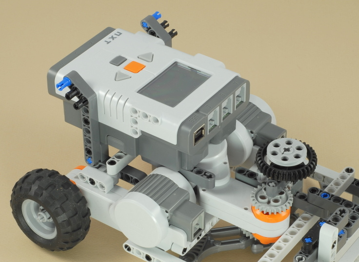
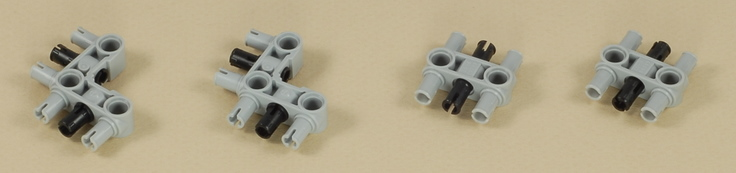

Fun Projects for your LEGO� MINDSTORMS� NXT!
|
|
Fun Projects for your LEGO� MINDSTORMS� NXT! |
| Crazy Lawn Mower |
|

1
2
3
4
5
| Check to make sure that all of the gears and bushings are not pushed too tightly onto the axles of this motor. They should be slightly loose so that everything spins easily. When you spin the motor by hand, it should coast gently to a stop. |
| In this step, the center motor will attach to the white cross beam of the base with one black peg. |
6
7
8

9
10
| Make sure the axles are centered through the wheels (they stick out the same amount on both sides). |
11
12

13
14
15

16


17
| Use two medium-length wires to attach the two wheel-drive motors to ports B and C on the NXT brick. Keep the left wire on the left side and the right wire on the right side (do not cross the wires). You can wrap the wires around the handle as shown to keep them out of the way. |
| Use a medium-length wire to attach the blade motor to port A on the NXT brick. You can wrap the wire around the handle as shown to keep it out of the way. |
18
19
| Use the shortest wire in this step and connect the touch sensor to to port 1 on the NXT brick. |
| Crazy
Lawn Mower Programming Two programs are provided for your lawn mower. The Mower program allows you to use the mower manually like a regular self-propelled push mower. Squeeze and hold the handle lever to mow straight ahead, then release the handle to stop. After going straight, the mower will do a powered turn for you next time you squeeze the handle lever (hold the lever in as long as you want the turn to last). The turns will alternate left and right followed by a straight pass. A pointer on the NXT display will indicate which direction is coming up next. The Robo Mower program makes the mower attempt to mow your lawn (actually, your room -- you know to keep your LEGOs inside, right?) by itself. Not sure what will happen with this one. Better give it lots of space to start with. Put it in the middle of a large open area and stand overhead to watch it. The turns will be more accurate on a hard floor, but it will also run on a low-pile carpet. |
Challenges
|
|
Copyright
�
2007-2009 by Dave Parker. All rights reserved. |